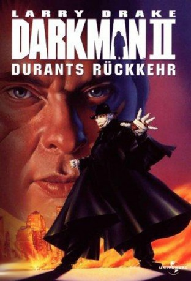

#10081 Darkman II - Durants Rückkehr
 
 IMDB-Wertung: 5.1 / 10
IMDB-Wertung: 5.1 / 10  Metascore: 0
Metascore: 0 
Mit Hilfe des jungen Wissenschaftlers Dr. Brinkmann arbeitet Dr. Peyton Westlake alias Darkman intensiv an der Entwicklung einer Formel für eine synthetische Haut. Kurz vor Abschluß der Arbeiten, die Westlake, der durch ein brutales Verbrechen entstellt wurde, wiederherstellen sollten, verhindern tragische und gewalttätige Umstände den Erfolg. Weiterhin zum Schattendasein verdammt, muß Westlake realisieren, daß sein totgeglaubter Erzfeind Durant noch lebt. Darkman nimmt Rache...
Jahr: 1995
Dauer: 92 Minuten
FSK: 18
Land: USA Studio: MCA/Universal Home VideoTonspuren:
Untertitel: Deutsch,
Auflösung: 720p (1280x720) Größe: 3737 MB
Genre: Action, Thriller, Horror, Sci-Fi, Krimi
Regisseur: Bradford May
Drehbuch: Robert Eisele, Lawrence Hertzog, Steven McKay
Soundtrack: Randy Miller
Darsteller:
 Larry Drake als Robert G. Durant
Larry Drake als Robert G. Durant Arnold Vosloo als Darkman / Peyton Westlake
Arnold Vosloo als Darkman / Peyton Westlake- Kim Delaney als Jill Randall
- Renée O'Connor als Laurie Brinkman
- Lawrence Dane als Dr. Alfred Hathaway
 David Ferry als Eddie
David Ferry als Eddie- Rod Wilson als Ivan Druganov
- James Millington als Mr. Perkins
 Phillip Jarrett als Dan
Phillip Jarrett als Dan Kevin Rushton als Skinhead
Kevin Rushton als Skinhead- Graham Rowat als Producer Bob
- Chris Gillett als Bob's Boss
- David Clement als Det. Stringer
- Anne Marie DeLuise als Receptionist
- Jesse Collins als Dr. David Brinkman
- Jack Langedijk als Rollo Latham
- Sten Eirik als Whitey
- Steve Mousseau als Roy
- Catherine Swing als Bonnie Cisco
- Adam Bramble als Doctor
- Harry Spiegel als Cabbie
- Candice Beaulieu als Little Girl
- Donna Mullin als Miss S&M
Datei: X:\FSK18-Collections\Darkman\Darkman II - Durants Rückkehr (1995, FSK18, 1280x720).mkv seit 28.11.2018
Festplatte: FSK18
 Alle Filme aus Gruppe 'FSK18-Collections\Darkman'
Alle Filme aus Gruppe 'FSK18-Collections\Darkman'